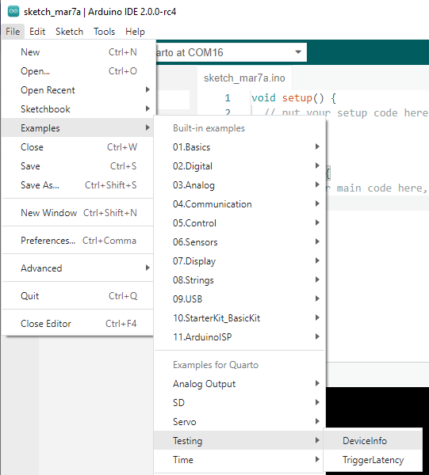

The latest firmware on the Quarto can now sync its clock to an external 10 MHz clock reference. This enables the Quarto's ADC reading and DAC updates as well as internal timers to all run synchronously with the rest of your experiment. The input 10 MHz reference must be within a few kHz of 10 MHz, otherwise the Quarto will revert to using its internal reference.
To enable this functionality, in the Arduino IDE, go to Boards Manager and install the latest (1.7.x or higher) version of "qNimble iMXRT Boards by qNimble". Then simply run
useExtClock(true);
in the setup() section of your code. More documention on how to use this functionality at Software Functions / External Clocks. Also check out the example UseExternalClock in the Arduino IDE under File, Examples, Examples for Quarto, Clocks.
This functionality requires firmware 1.30.X or higher. If you have an Quarto running an earlier firmware, please contact qNimble about upgrading your firmware.
If you aren't sure what firmware version of the Quarto you have, open the DeviceInfo example under Testing:
And when you run it, the output on the Serial Monitor should look something like:
Quarto Device Information
SN: 123
Device ID: qN-101.5.1
Firmware Revision: 1.29.45
If you see a firmware revision lower than 1.30.X, you will need to upgrade your firmware to use this feature. Please contact qNimble about upgrading your firmware.